O Canto da Chaleira
Promovendo a criatividade. Enriquecendo a comunidade.
Promovendo a criatividade. Enriquecendo a comunidade.
O Malibu Club abriu as portas para uma viagem no tempo, transformando-se num verdadeiro túnel de nostalgia que trouxe de volta a magia dos anos 90 e 2000! A performance especial da equipa de dança do clube e a atuação surpresa dos júris, acompanhados pela irreverente Biannah Montana, surpreenderam todos os presentes. Para fechar com chave de ouro, o inconfundível DJ Canelas comandou a mesa de som, garantindo uma pista sempre cheia e contagiante até ao amanhecer.
O evento contou ainda com uma competição de dança, avaliados pelos jurados Isabella Rogers, Cristóvão McDuffin e Valentina Romero, que trouxeram prestígio e brilho extra à celebração, tornando esta festa uma verdadeira ode à música e à memória coletiva de uma geração.

O bar noturno Black Diamond voltou a mostrar porque é um dos espaços de excelência de Puerto Esperanza, transformando-se num verdadeiro cenário do Velho Oeste! Entre cowboys e cowgirls, diversão sem limites e a adrenalina da primeira largada da cidade, a noite foi marcada por jogos de sorte, desafios intensos e a possibilidade de garantir entrada no prestigiado PE TOUR: O.NE, com um prémio de 100 000$.
A parceria com a associação O Canto da Chaleira trouxe ainda mais brilho à festa, com as atuações envolventes de Isabella Rogers e Cristóvão McDuffin (membros do grupo de dança "Thunder"), que encantaram o público com uma coreografia marcante por eles feita e partilhada com a fantástica equipa de dançarinos do bar.


O restaurante temático Hog’s Pub, em parceria com a associação O Canto da Chaleira, abriu as portas a uma noite verdadeiramente encantada. Inspirado no universo de Harry Potter, o evento trouxe ao público a experiência única de degustar poções misteriosas, cada uma com o seu efeito secundário surpresa, desde declarações de amor inusitadas até risadas inesperadas.
Para dar o ritmo à magia, o inconfundível DJ Diogo Canelas assumiu o comando da pista, oferecendo uma sessão de techno ao ar livre que hipnotizou todos os presentes. Entre caldeirões fumegantes, copos cintilantes e uma energia vibrante, o Hog’s Pub transformou-se numa verdadeira escola de feitiçaria festiva, onde música e fantasia se encontraram para criar uma noite inesquecível.
 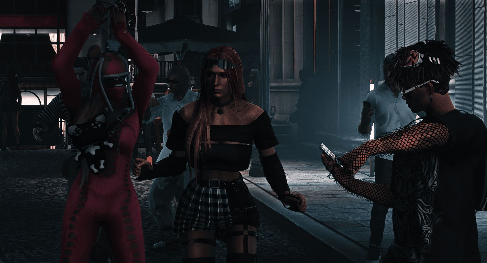
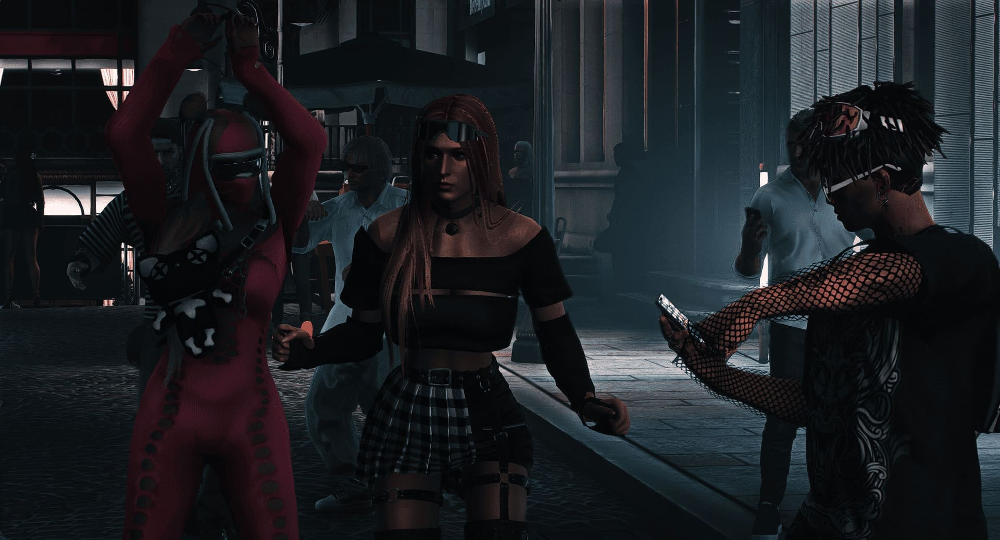


 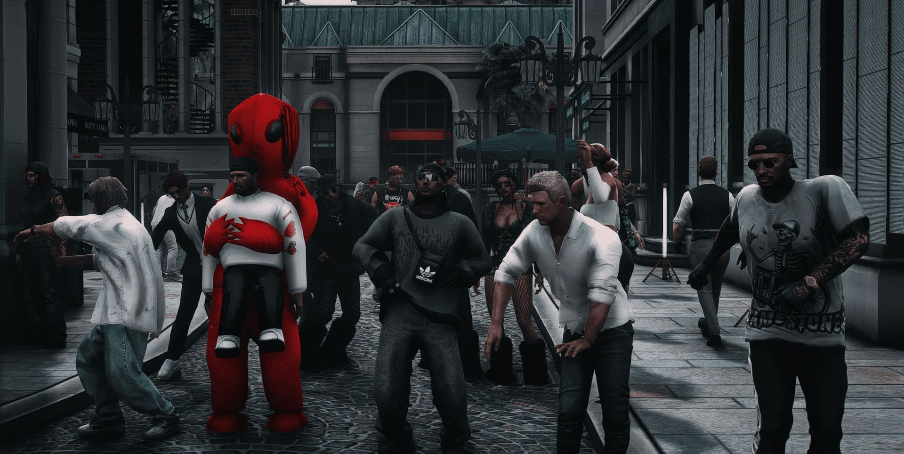
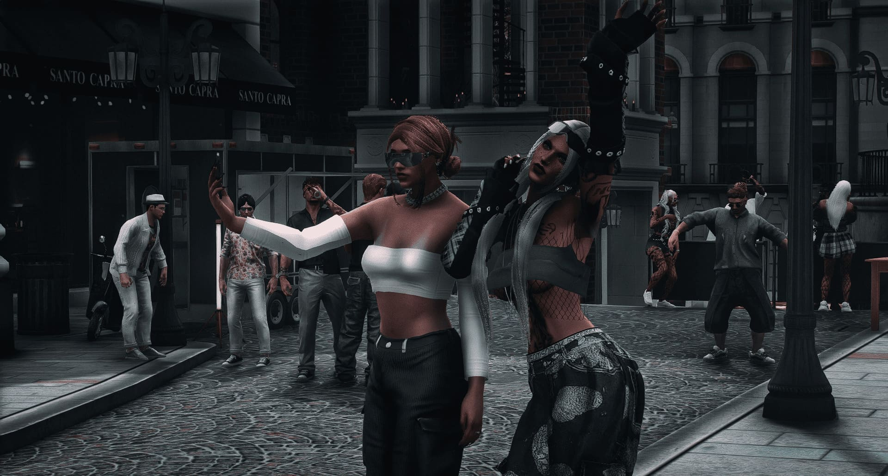
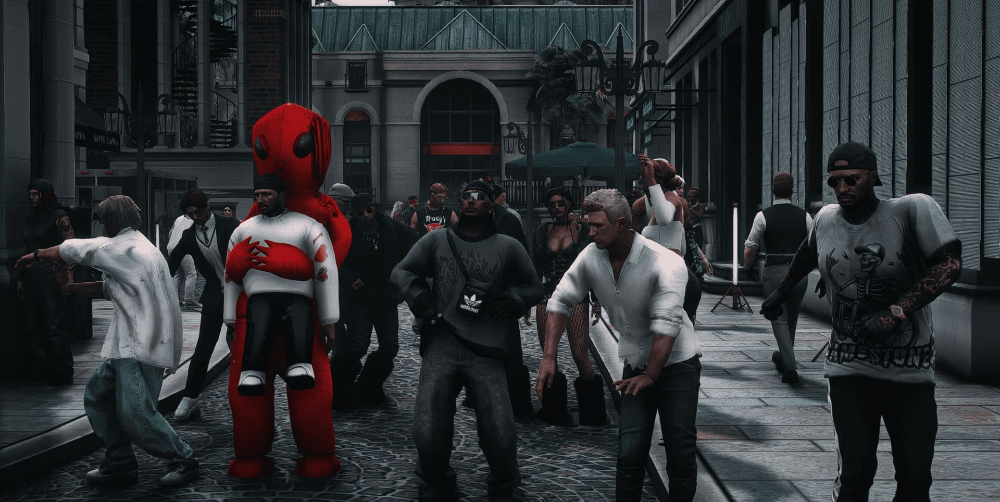
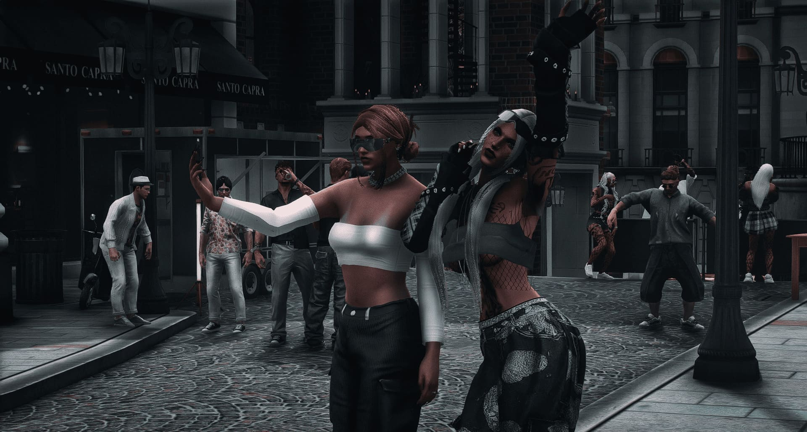

 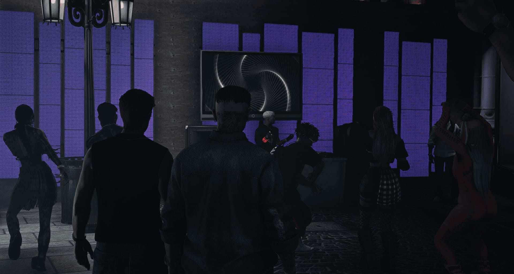
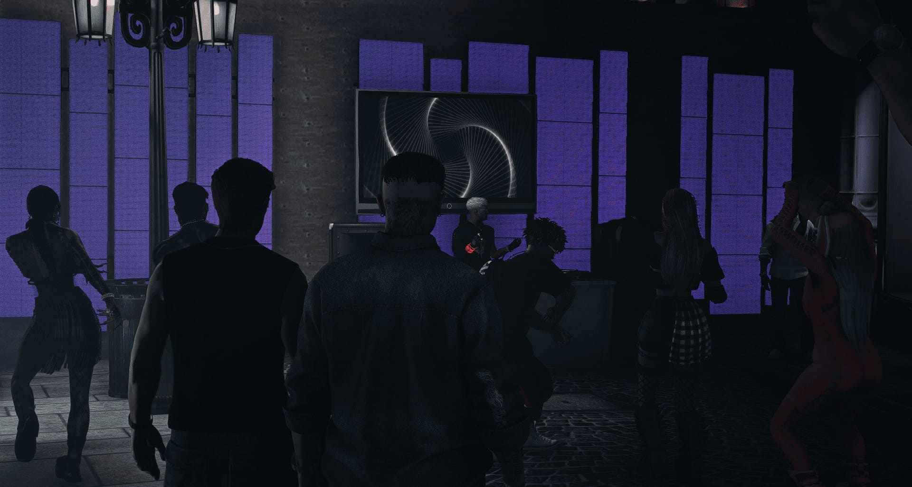
O bar noturno Malibu recebeu, em parceria com a associação O Canto da Chaleira, uma noite única em clima de bailarico com fortes influências portuguesas. O público foi brindado com a voz contagiante de John Blake e os ritmos animados do DJ Diogo Canelas, ambos membros honorários da nossa associação, que transformaram a pista num verdadeiro arraial moderno.
Entre a tradição e a modernidade, o bailarico de Esperanza mostrou que a cultura portuguesa pode reinventar-se e ganhar novas formas sem perder a sua essência. Foi uma noite de música, dança e convívio que ficará na memória de todos os presentes, reforçando a união entre o Malibu e o Canto da Chaleira em torno da celebração da cultura e da alegria partilhada.
 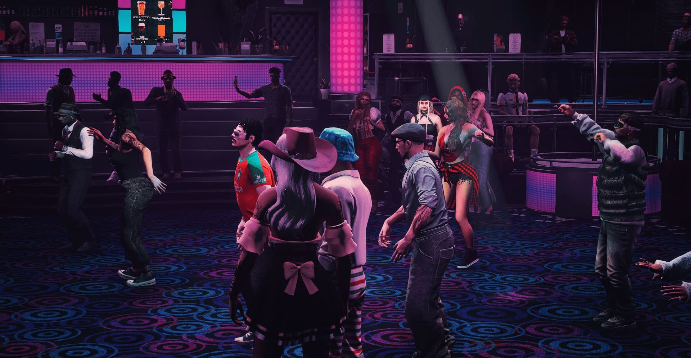
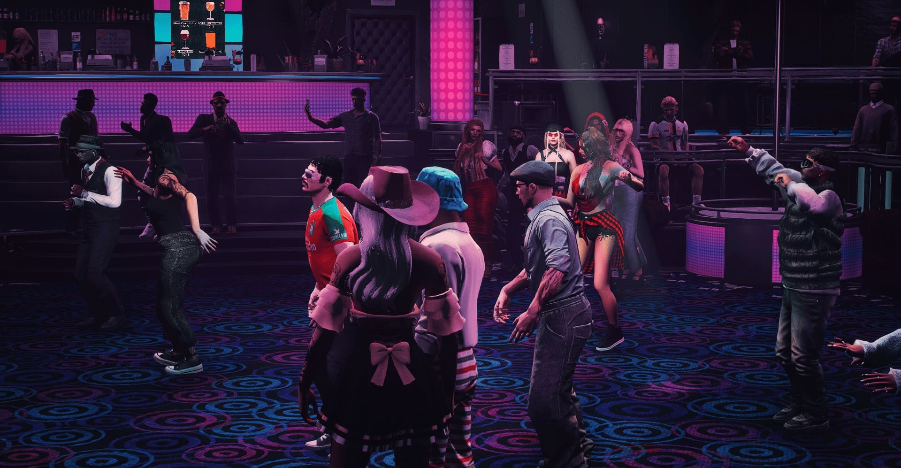

 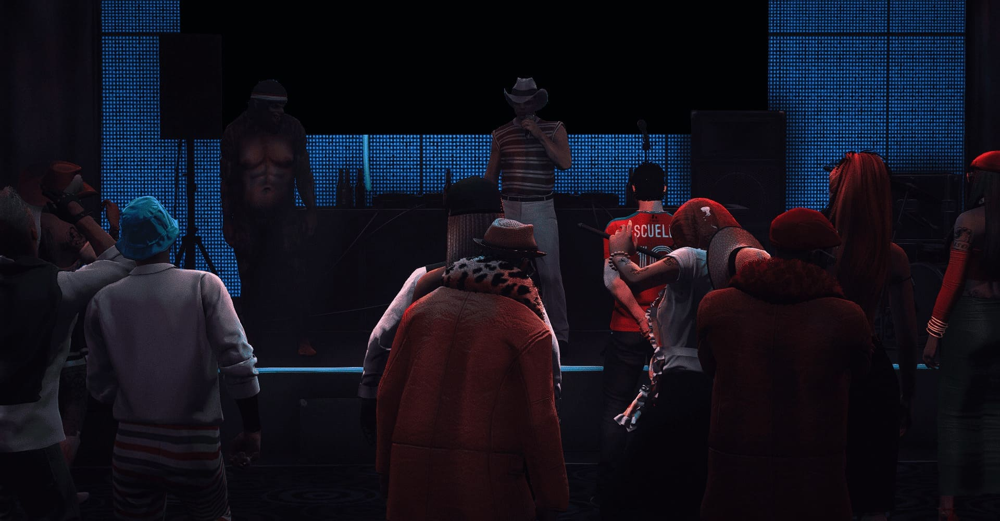
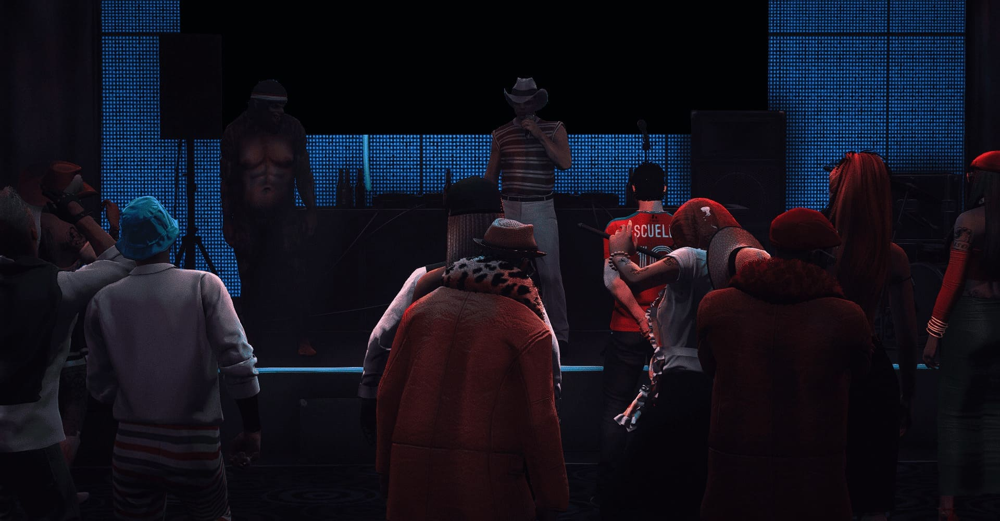


O clube motard Caveiras do Alfasto anunciou a abertura do seu novo bar, um espaço pensado para associados e entusiastas do motociclismo. O local promete ser um ponto de encontro descontraído, com ambiente temático, música ao vivo e bebidas variadas. A direção do clube afirma que o bar será também palco para eventos, reuniões e atividades culturais voltadas à comunidade motard, reforçando o espírito de camaradagem e a paixão pelas motos.
A inauguração do bar, realizada em parceria com O Canto da Chaleira, foi um verdadeiro sucesso, reunindo amigos, sócios e fãs do clube. O evento contou com a presença dos cantores João Elias e Cristóvão McDuffin, que proporcionaram atuações fantásticas e animaram o público durante toda a noite.


 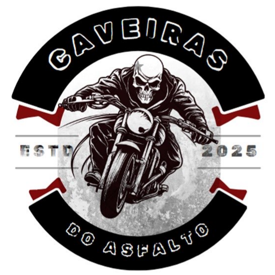
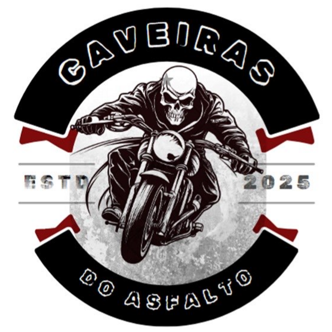